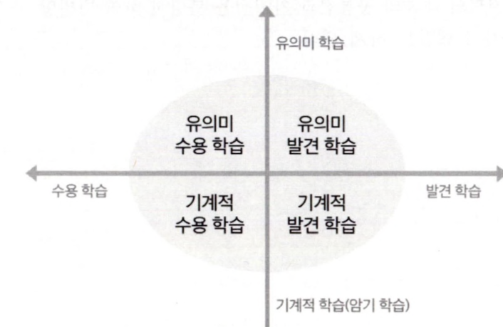

회독본
6.과학
노트 p2–p35 · 34쪽 · 글자는 전사본, 배치는 노트
과학의 본성
과학 탐구 과정
1) 기초 탐구 과정 기능
2) 통합 탐구 과정 기능
학습모형
1) 경험 학습 모형
2) 발견 학습 모형 (→ 통제↓)
및 관찰·탐색교사 의도와 달라도 수용
및 관찰·탐색구체화·산출
및 개념 정리규칙성 제시 X
↳ 발견 못하면 추가 자료, 피드백
3) 탐구 학습 모형
↳ 검증 가능, 평서, 인과
자료 해석
결론 도출
문제 인식
4) 순환 학습 모형 (5E, POE 모형)
↳ (서술적 → 초등)
* 5E 모형 (Eng, Explo, Expla, Elab, Eval)
(⇒ 인지적 갈등 유발)
결과 예상
↳ 실험 검증
↳ 교사 설명, 개념 제시
↳ 예시 찾기 등
↳ 적용
* POE 모형 (Pred, Obsrv, Expla) ≒ PEOE (E-Exp.)
+ 정당한 까닭
글로 쓰기 → 정교화
근거 바탕 + 까닭
↳ 추리 가능
6) 개념 변화 학습 모형 ⇒ "오개념 변화"
오개념의 특징
6) STS 학습 모형 (Science - Technology - Society)
물질 (유의사항, 5개념)
1) 물체와 물질
물체의 분류
물질의 세 상태
고체·액체
기체
2) 물의 상변화
(3) 4학년 2학기 - 여러 가지 기체
여러 가지 기체 한눈에 보기
(4) 5학년 1학기 - 용해와 용액
용해와 용액 한눈에 보기
(5) 5학년 2학기 - 혼합물의 분리
혼합물의 분리 한눈에 보기
(6) 6학년 1학기 - 산과 염기
산과 염기 한눈에 보기
물질의 연소
동물의 생활
식물의 생활
생물의 한살이
다양한 생물과 우리 생활
생물과 환경
우리 몸의 구조와 기능
식물의 구조와 기능
힘과 우리 생활
소리의 성질
자석의 이용
빛의 성질
빛의 성질 한눈에 보기
열과 우리 생활
열과 우리 생활 한눈에 보기
물체의 운동
물체의 운동 한눈에 보기
전기의 이용
지구와 바다
땅의 변화
| 화성암 | 냉각 속도 (=지표 근접도) | 철·마그네슘 (∝(1-SiO₂)) |
|---|---|---|
| 화산암 - 현무암 | ↑, 알갱이↓ | ↑, 어두운색 |
| 심성암 - 화강암 | ↓, 알갱이↑ | ↓, 밝은색 |
밤하늘 관찰
지층과 화석
날씨와 우리 생활
지구의 운동
계절의 변화
감염병과 건강한 생활
과학과 사회
2. 기후 변화와 우리 생활
3. 자원과 에너지
과학의 본성
1. 과학 태도
2. 과학적 방법
3. 과학 지식
4. 과학의 진보
과학 학습 이론
1. 구성주의
| 구성주의 | 객관주의 | |
|---|---|---|
| 학습자 | 능동적 창조 | 수동적 수용 |
| 교사 | 안내·조력 | 전달·지휘 |
| 방법 | 협동·문제해결학습 | 강의·암기 |
| 평가 | 질적 : 교육 방법 평가 | 양적 : 학습자 서열 |
2. 행동주의
3. 인지 발달 이론 (피아제)
4. 유의미 수용 학습 이론 (오슈벨)

5. 지식의 구조 (브루너)
교육과정 설계의 개요
과학과 교육과정은 미래 사회를 살아갈 시민으로서 ‘과학적 소양을 갖추고 더불어 살아가는 창의적인 사람’을 육성하는 것을 목적으로 한다. 과학과 교육과정에서는 과학 지식·이해, 과정·기능, 가치·태도가 복합적으로 발현되어 나타나는 총체적인 능력인 역량을 함양하고자 한다.
과학과 교육과정에서는 자기관리, 지식정보처리, 창의적 사고, 심미적 감성, 협력적 소통, 공동체 역량 등과 같은 범교과적이고 일반적인 총론의 역량과 연계하여 과학적 탐구와 문제해결 능력, 과학적 의사결정 능력 등을 기르는 데 초점을 둔다. 이를 위해 과학과 교육과정은 생태 소양, 민주 시민의식, 디지털 소양을 갖추고, 첨단 과학기술을 기반으로 융복합 영역을 창출하는 미래 사회에 유연하게 대응할 수 있는 과학적 소양을 갖춘 사람을 양성하는 것을 목표로 한다.
과학과 교육과정의 영역은 운동과 에너지, 물질, 생명, 지구와 우주, 과학과 사회의 5개 영역으로 구성하였다. 운동과 에너지 영역은 자연과 사물 사이의 상호작용이나 법칙을, 물질 영역은 물질의 구조와 성질 및 화학적 변화를, 생명 영역은 인간을 포함한 생명 현상의 원리를, 지구와 우주 영역은 자연 현상의 변화와 지구시스템의 주요 원리를 다룬다. 과학과 사회 영역은 개인과 사회의 지속가능한 발전에서 과학의 역할을 강조하는 현실을 반영한 추가한 영역으로, 과학의 일반적 성격 및 사회적 역할을 중점적으로 다룬다.
과학과 핵심 아이디어는 과학 영역별로 주요 개념과 일반화된 지식을 중심으로 구성하였다. 운동과 에너지, 물질, 생명, 지구와 우주, 과학과 사회 등 과학의 영역별로 주요 과학 개념과 원리의 일상생활 적용과 통합·융합 교육을 체험할 수 있도록 과학의 지식·이해, 과정·기능, 가치·태도를 종합하여 핵심 아이디어를 도출하였다. 이러한 핵심 아이디어는 해당 영역의 학습을 통해 일반화할 수 있는 내용을 진술한 것으로, 과학과 관통개념을 공유하면서 과목별로 위계성과 연속성을 지닌다.
과학과 교육과정은 ‘성격 및 목표’, ‘내용 체계 및 성취기준’, ‘교수·학습 및 평가’로 구성된다. ‘성격 및 목표’에서는 각 과목의 고유한 특성과 주요 목표를 제시하였다. ‘내용 체계 및 성취기준’에서는 과목의 핵심 아이디어와 지식·이해, 과정·기능, 가치·태도별 주요 내용 요소 및 학생이 교과 학습을 통해 할 수 있기를 기대하는 도달점을 성취기준으로 제시하였다. 즉, 과학과 성취기준은 다양한 탐구 중심의 학습을 통해 ‘영역’별 지식·이해, 과정·기능, 가치·태도의 세 차원을 상호보완적으로 함양함으로써 영역별 핵심 아이디어에 도달할 수 있도록 제시하였다. 과학과 지식·이해는 과학과 영역별로 학생이 알고 이해해야 하는 내용을 학년군별로 제시하였다. 과학과 과정·기능은 학생들이 과학 학습을 통해 개발할 것으로 기대하는 과학과 탐구 기능과 과정에 해당하는 것으로, 문제 인식 및 가설 설정, 탐구 설계 및 수행, 자료 수집·분석 및 해석, 결론 도출 및 일반화, 의사소통과 협업을 근간으로 영역별 특성을 반영하였다. 과학과 가치·태도는 과학 가치(과학의 심미적 가치, 감수성 등), 과학 태도(과학 창의성, 유용성, 윤리성, 개방성 등), 참여와 실천(과학문화 향유, 안전·지속가능 사회에 기여 등)으로 구성하였다. ‘교수·학습 및 평가’에서는 교육과정에서 제시한 성취기준에 도달하는 데 필요한 교수·학습 및 평가의 주요 방향을 제시하였다. 과학과 교육과정에서는 학생이 지식·이해뿐만 아니라 과정·기능, 가치·태도를 균형 있게 발달시킬 수 있도록 지도하고, 학생이 행위 주체로서 자신의 역량 함양을 위해 교수·학습에 참여하도록 하는 방향, 그리고 교수·학습과 연계하여 학생의 학습과 성장을 도울 수 있는 평가 방향을 제시하였다. 특히, 미래 교육 환경에 적합한 다양한 교수·학습 활동을 통해 디지털·인공지능 기초 소양을 함양하도록 하였다.
1. 성격 및 목표
가. 성격
‘과학’은 ‘과학적 소양을 갖추고 더불어 살아가는 창의적인 사람’을 육성하기 위한 교과이다. ‘과학’ 교과에서는 모든 학생이 과학의 기본 개념을 익히고, 과학 탐구 능력과 태도를 길러, 자연과 일상생활에서 접하는 현상을 과학적으로 이해하고, 민주 시민으로서 개인과 사회 문제를 과학적으로 해결하고 참여·실천하는 역량 함양에 중점을 둔다.
‘과학’은 초등학교 1~2학년에서 학습한 내용과 연계하여 미래 사회를 살아가기 위한 역량을 함양하고, 고등학교 과학 교과목 학습에 필요한 과학 기초 학력을 보장하기 위한 교과이다. ‘과학’은 초등학교 1~2학년의 ‘슬기로운 생활’과 고등학교 1학년의 ‘통합과학1, 2’, ‘과학탐구실험1, 2’, 그리고 고등학교 일반선택, 융합선택 및 진로선택 과목과 긴밀하게 연계되어 있다.
‘과학’은 운동과 에너지, 물질, 생명, 지구와 우주 및 과학과 사회의 5개 영역으로 구성된다. 운동과 에너지 영역에서는 힘과 에너지, 전기와 자기, 열, 빛과 파동 등을 다루며, 물질 영역에서는 물질의 성질, 물질의 변화, 물질의 구조 등을 다룬다. 생명 영역에서는 생물의 구조와 에너지, 항상성과 몸의 조절, 생명의 연속성, 환경과 생태계, 생명과학과 인간의 생활 등을 다루며, 지구와 우주 영역에서는 고체 지구, 유체 지구, 천체 등을 다룬다. 과학과 사회 영역에서는 이들 4개 영역의 내용을 통합적으로 다루면서 과학과 안전, 과학과 지속가능한 사회, 과학과 진로 등을 다룬다.
미래 사회는 첨단 과학기술을 기반으로 혁신적인 융복합 영역이 창출되는 사회로, 과학적 문제해결력과 창의성을 발휘하는 전문가 집단과 과학적 소양을 갖춘 시민이 함께 이끄는 사회이다. ‘과학’에서는 다양한 탐구 중심의 학습을 통해 ‘과학’의 5개 영역과 관련된 지식·이해, 과정·기능, 가치·태도의 세 차원을 상호보완적으로 함양함으로써 영역별 핵심 아이디어를 습득하고, 행위 주체로서 갖추어야 할 과학적 소양을 기를 수 있을 것이다.
나. 목표
자연 현상과 일상생활에 대하여 흥미와 호기심을 가지고 과학적 탐구를 통해 주변의 현상을 이해하고, 개인과 사회의 문제를 과학적이고 창의적으로 해결하는 데 민주 시민으로서 참여하고 실천하는 과학적 소양을 기른다.
2. 내용 체계 및 성취기준
가. 내용 체계
(1) 운동과 에너지
| 핵심 아이디어 | ·자연과 일상생활 속의 여러 가지 힘은 물체의 속력과 운동 방향을 변화시키고, 물체의 운동은 힘과 에너지를 통해 예측할 수 있으며, 이는 안전한 일상생활의 토대가 된다. ·전하와 전류는 다양한 전기와 자기 현상을 일으키고, 전기와 자기에 대한 성질은 전구, 전동기 등 여러 가지 전기 기구의 작동 원리로 유용하게 활용된다. ·열은 온도가 높은 곳에서 낮은 곳으로 이동하며, 일상생활에서는 단열 등 다양한 분야에 물질의 열적 성질이나 열의 이동 방식이 이용된다. ·빛과 소리는 반사, 굴절, 진동 등 파동의 특성을 가지며, 그 특성은 거울, 렌즈, 악기, 색의 구현 등 편리하고 심미적인 삶에 도움이 된다. | ||
|---|---|---|---|
| 구분범주 | 학년(군)별 내용 요소 | ||
| 초등학교 | |||
| 3~4학년군 | 5~6학년군 | ||
| 지식·이해 | 힘과 에너지 | ·밀기와 당기기 ·무게 ·수평잡기 ·도구의 이용 | ·위치의 변화 ·속력 ·속력과 안전 |
| 전기와 자기 | ·자석과 물체 사이의 힘 ·자석과 자석 사이의 힘 ·자석의 극 ·자석의 이용 | ·전기 회로 ·전지의 직렬연결 ·전자석 ·전기 안전 | |
| 열 | ·온도 ·열의 이동 ·단열 | ·열평형 ·전도 ·대류 ·복사 ·비열 ·열팽창 | ||
|---|---|---|---|---|
| 빛과 파동 | ·소리의 발생 ·소리의 세기 ·소리의 높낮이 ·소리의 전달 | ·빛의 직진 ·평면거울에서 빛의 반사 ·빛의 굴절 ·렌즈의 이용 | ·시각과 상 ·반사와 굴절 ·거울과 렌즈 ·빛의 합성과 색 ·파동의 발생과 전달 ·파동의 요소와 소리의 특성 | |
| 과정·기능 | ·자연과 일상생활에서 운동과 에너지 관련 문제 인식하기 ·문제를 해결하기 위한 탐구 설계하기 ·관찰, 측정, 분류, 예상, 추리 등을 통해 자료를 수집하고 비교·분석하기 ·수학적 사고와 컴퓨터 및 모형 활용하기 ·결론을 도출하고, 자연과 일상생활에서 운동과 에너지 관련 상황에 적용·설명하기 ·자신의 생각과 주장을 과학적 언어를 사용하여 다양한 방식으로 표현하고 공유하기 | ·자연과 일상생활에서 운동과 에너지와 관련된 현상을 관찰하고 문제를 찾아 정의하고 가설을 설정하기 ·적절한 변인을 포함하여 탐구 설계하기 ·운동과 에너지 사이의 관계를 이끌어내기 위해 자료를 수집하고 이를 그래프로 변환하여 해석하기 ·운동과 에너지와 관련된 다양한 현상을 관찰하여 규칙성을 추리하기 ·모형을 만들어 현상을 설명하거나 예측하기 ·과학적 증거에 기반하여 주장하기 | ||
| 가치·태도 | ·과학의 심미적 가치 ·과학 유용성 ·자연과 과학에 대한 감수성 ·과학 창의성 ·과학 활동의 윤리성 ·과학 문제 해결에 대한 개방성 ·안전·지속가능 사회에 기여 ·과학 문화 향유 | |||
(2) 물질
| 핵심 아이디어 | ·물질은 여러 가지 상태로 존재하며, 구성 입자의 운동에 따라 물질의 상태와 물리적 성질이 변한다. ·물질의 상태 변화 및 화학 반응에는 에너지 출입이 수반되며, 이는 일상생활에 유용하게 활용된다. ·물질은 서로 구분할 수 있는 고유한 특성을 가지며, 물질의 특성은 일상생활의 다양한 혼합물 분리에 이용된다. ·화학 반응을 통해 물질은 다른 물질로 변하며, 화학 반응의 규칙성은 새로운 물질의 생성 원리가 된다. | ||
|---|---|---|---|
| 구분범주 | 학년(군)별 내용 요소 | ||
| 초등학교 | |||
| 3~4학년군 | 5~6학년군 | ||
| 지식·이해 | 물질의 성질 | ·물체와 물질 ·물질의 세 가지 상태 ·기체의 무게 ·온도와 압력에 따른 기체의 부피 변화 ·물의 상태 변화 | ·용액, 용매, 용질 ·용해 ·용액의 진하기 ·혼합물의 분리 |
| 물질의 변화 | ·지시약 ·산성 용액 ·염기성 용액 ·연소 조건 ·연소 생성물 | ||
| 물질의 구조 | |||
| 과정·기능 | ·자연과 일상생활에서 물질과 관련된 문제 인식하기 ·관찰, 측정, 분류, 예상, 추리 등을 통해 자료를 수집하고 비교·분석하기 ·탐구 결과를 해석하여 결론을 도출하기 ·물질과 관련된 일상생활의 문제를 해결하기 위한 탐구 설계하기 ·결론을 도출하고, 자연과 일상생활에서 물질 관련 상황에 적용‧설명하기 ·자신의 생각과 주장을 과학적 언어를 사용하여 다양한 방식으로 표현하고 공유하기 | ||
| 가치·태도 | ·과학의 심미적 가치 ·과학 유용성 ·자연과 과학에 대한 감수성 ·과학 창의성 ·과학 활동의 윤리성 ·과학 문제 해결에 대한 개방성 ·안전·지속가능 사회에 기여 ·과학 문화 향유 | ||
(3) 생명
| 핵심 아이디어 | ·생물은 세포로 이루어져 있고, 여러 구성 단계가 유기적으로 연관되어 있으며, 조화로운 작용을 통해 건강한 몸을 유지한다. ·식물은 광합성으로 양분을 만들며, 생물은 호흡을 통해 생명 활동에 필요한 에너지를 얻는다. ·동물은 다양한 감각 기관을 통해 자극을 받아들이고, 신경계와 호르몬의 작용을 통해 반응한다. ·생물은 생식을 통해 자손을 생산하고, 생물의 형질은 유전자에 의해 자손에게 전달되며, 생물의 유전 현상은 사람의 가계에서도 관찰된다. ·우리 주변의 다양한 생물은 환경과 영향을 주고받으며 밀접한 관계를 맺고 있으며, 생물다양성은 생태계와 인간의 삶과도 밀접하게 관련되어 있다. | ||
|---|---|---|---|
| 구분범주 | 학년(군)별 내용 요소 | ||
| 초등학교 | |||
| 3~4학년군 | 5~6학년군 | ||
| 지식·이해 | 생물의구조와에너지 | ·동물의 생김새 ·식물의 생김새 ·균류, 원생생물, 세균의 특징 | ·세포의 구조 ·뼈와 근육의 구조와 기능 ·소화·순환·호흡·배설 기관의 구조와 기능 ·뿌리, 줄기, 잎, 꽃의 구조와 기능 ·증산 작용 ·광합성 산물 |
| 항상성과 몸의 조절 | |||
| 생명의연속성 | ·동물의 한살이 ·식물의 한살이 ·식물이 자라는 조건 ·다양한 환경에 사는 동물과 식물 ·특징에 따른 동물 분류 ·특징에 따른 식물 분류 | ||
| 환경과생태계 | ·생물 요소와 비생물 요소 ·환경오염이 생물에 미치는 영향 ·먹이사슬과 먹이그물 | ||
| 생명과학과 인간의 생활 | ·생활 속에서 동물과 식물의 이용 ·균류, 원생생물, 세균의 이용 ·생명과학과 우리 생활 | ||
| 과정·기능 | ·자연과 일상생활에서 생명 현상 관련 문제 인식하기 | ||
| ·문제를 해결하기 위한 탐구 설계하기 ·생물 관찰 및 분류하기 ·자료 조사 및 해석하기 ·모형으로 설명하기 ·자신의 생각과 주장을 과학적 언어를 사용하여 협력적 소통하기 | ·생명 현상 관찰을 토대로 문제를 인식하고 가설 설정하기 ·관찰, 측정, 분류, 예상, 추리 등을 통해 자료를 수집하고 비교·분석하기 ·적절한 변인을 포함하여 탐구 설계하기 ·탐구 결과를 해석하여 결론을 도출하기 ·모형을 만들어 생명 현상을 설명하거나 예측하기 ·협력적 소통하기 | |
|---|---|---|
| 가치·태도 | ·과학의 심미적 가치 ·과학 유용성 ·자연과 과학에 대한 감수성 ·과학 창의성 ·과학 활동의 윤리성 ·과학 문제 해결에 대한 개방성 ·안전·지속가능 사회에 기여 ·과학 문화 향유 | |
(4) 지구와 우주
| 핵심 아이디어 | ·지구계는 지권, 수권, 기권, 생물권 등으로 구성되며, 이러한 지구계 구성 요소들이 상호작용을 통해 에너지와 물질을 교환하는 과정에서 다양한 자연 현상들이 발생한다. ·암석과 화석, 지구 내부를 탐구함으로써 지질시대 동안 지구 환경과 생물의 변천 과정을 밝혀낼 수 있다. ·물은 땅과 바다, 대기 등으로 끊임없이 순환하면서 지표의 특징을 변화시키고 지하구조를 만든다. ·지구의 기후시스템은 태양 복사와 지구 복사, 인간 활동 등의 영향을 받으며, 이러한 요인들이 복합적으로 상호작용하여 나타난 기상 현상과 기후변화는 우리 생활과 지속가능성에 영향을 미친다. ·태양계는 행성 및 소천체 등으로 구성되며, 생성 과정에 따라 태양계 천체의 표면은 다양하게 나타난다. ·별의 표면 온도, 크기, 질량, 거리 등을 결정하는 데 관측 자료와 증거 기반 해석 등이 활용된다. | ||
|---|---|---|---|
| 구분범주 | 학년(군)별 내용 요소 | ||
| 초등학교 | |||
| 3~4학년군 | 5~6학년군 | ||
| 지식·이해 | 고체 지구 | ·강 주변 지형 ·화산 활동 ·화성암 ·지진 대처 방법 | ·지층 ·퇴적암 ·화석의 생성 ·과거 생물과 환경 |
| 유체 지구 | ·바다의 특징 ·밀물과 썰물 ·파도 ·바닷가 주변 지형 ·갯벌 보전 ·지구의 대기 | ·날씨와 기상 요소 ·이슬, 안개, 구름 ·고기압과 저기압 | |
| 천체 | ·달의 모양과 표면 ·달의 위상변화 ·태양계 행성 ·별과 별자리 | ·태양과 별의 위치 변화 ·지구의 자전과 공전 ·계절별 별자리 변화 ·태양 고도의 일변화 ·계절별 낮의 길이 | ·태양계 구성 천체 ·태양 표면과 태양 활동 ·달의 위상변화 ·일식과 월식 ·연주시차 ·별의 특성 ·우리은하 ·우주 팽창 ·우주탐사 | |
|---|---|---|---|---|
| 과정·기능 | ·자연과 일상생활에서 지구와 우주 관련 문제 인식하기 ·문제를 해결하기 위한 탐구 설계하기 ·관찰, 측정, 분류, 예상, 추리 등을 통해 자료를 수집하고 비교·분석하기 ·수학적 사고, 컴퓨터 및 모형 활용하기 ·결론을 도출하고, 지구와 우주 관련 상황에 적용·설명하기 ·자신의 생각과 주장을 과학적 언어를 사용하여 다양한 방식으로 표현하고 공유하기 | ·지구와 우주 관련 현상 관찰을 토대로 문제를 인식하고 가설을 설정하기 ·관련 변인을 포함하여 탐구 설계하기 ·지구시스템 구성 요소들의 상호작용에 대한 자료를 조사·평가 및 변환하기 ·지구와 우주와 관련된 다양한 현상을 관찰하여 규칙성을 추리하기 ·모형을 만들어 현상을 설명하거나 예측하기 ·과학적 증거에 기반하여 주장하기 | ||
| 가치·태도 | ·과학의 심미적 가치 ·과학 유용성 ·자연과 과학에 대한 감수성 ·과학 창의성 ·과학 활동의 윤리성 ·과학 문제 해결에 대한 개방성 ·안전·지속가능 사회에 기여 ·과학 문화 향유 | |||
(5) 과학과 사회
| 핵심 아이디어 | ·과학 탐구를 통해 얻은 과학기술은 질병의 발생 원인 규명과 예방법 마련 등 인류 복지에 기여하고, 인류가 처한 여러 가지 재난 상황 극복에 활용된다. ·과학기술은 자원과 에너지 등의 효율적 이용 방안을 제공하여 지속가능한 사회에 기여한다. ·과학기술의 발달은 미래 사회의 모습과 직업에 영향을 미치며, 개인은 이러한 미래 사회의 모습과 새로운 진로를 탐색하며 자신의 삶을 준비한다. | ||
|---|---|---|---|
| 구분범주 | 학년(군)별 내용 요소 | ||
| 초등학교 | |||
| 3~4학년군 | 5~6학년군 | ||
| 지식·이해 | 과학과 안전·질병과 예방 ·감염병과 건강한 생활 | ||
| 과학과 지속가능한 사회 | ·기후변화 사례 ·기후위기 대응 | ·자원의 종류 ·자원의 효율적인 이용 ·지속가능한 에너지 이용 | |
| 과학과 진로 | ·진로와 과학의 관련성 ·진로 계획 | ||
| 과정·기능 | ·자연과 일상생활에서 과학과 기술 및 사회의 상호작용과 관련된 문제 인식하기 ·문제를 해결하기 위한 탐구 설계하기 ·신뢰성 있는 출처를 활용하여 자료를 수집하고 정리하기 ·융합적 사고와 수학적 사고, 컴퓨터 및 모형 활용하기 ·결론을 도출하고, 과학·기술·사회의 문제 해결 상황에 적용·설명하기 ·자신의 생각과 주장을 과학적 언어를 사용하여 다양한 방식으로 표현하고 공유하기 |
|---|---|
| 가치·태도 |
나. 성취기준
[초등학교 3~4학년]
(1) 힘과 우리 생활
<탐구 활동>
(2) 동물의 생활
<탐구 활동>
(3) 식물의 생활
<탐구 활동>
(4) 생물의 한살이
<탐구 활동>
(5) 물체와 물질
<탐구 활동>
<탐구 활동>
(7) 소리의 성질
<탐구 활동>
(8) 감염병과 건강한 생활
<탐구 활동>
(9) 자석의 이용
<탐구 활동>
(10) 물의 상태 변화
<탐구 활동>
(11) 땅의 변화
<탐구 활동>
(12) 다양한 생물과 우리 생활
<탐구 활동>
(13) 밤하늘 관찰
<탐구 활동>
(14) 생물과 환경
<탐구 활동>
(15) 여러 가지 기체
<탐구 활동>
(16) 기후변화와 우리 생활
<탐구 활동>
[초등학교 5~6학년]
(1) 지층과 화석
<탐구 활동>
(2) 빛의 성질
<탐구 활동>
(3) 용해와 용액
<탐구 활동>
(4) 우리 몸의 구조와 기능
<탐구 활동>
(5) 혼합물의 분리
<탐구 활동>
(6) 날씨와 우리 생활
<탐구 활동>
(7) 열과 우리 생활
<탐구 활동>
(8) 자원과 에너지
<탐구 활동>
(9) 산과 염기
(10) 물체의 운동
<탐구 활동>
(11) 식물의 구조와 기능
<탐구 활동>
(12) 지구의 운동
<탐구 활동>
(13) 계절의 변화
<탐구 활동>
(14) 물질의 연소
<탐구 활동>
(15) 전기의 이용
<탐구 활동>
(16) 과학과 나의 진로
<탐구 활동>